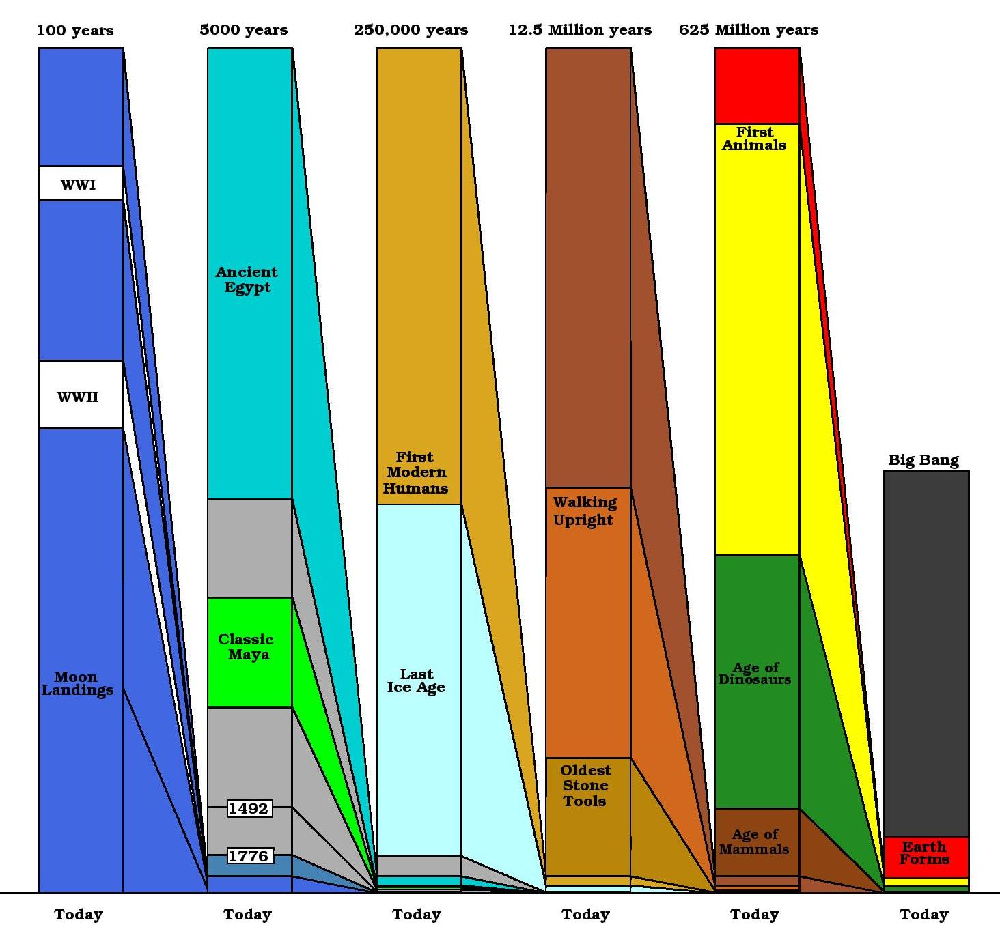

by MATTHEW HEDMAN
Reseach Associate, Enrico Fermi Institute and Research Fellow, Center
for Cosmological Physics
In
the upcoming series of lectures entitled: " The
Age of Things: Sticks, Stones and the Universe
", Research
Fellow Matthew Hedman will discuss multi-disciplinary efforts to figure
out when things happened in the past. Many interesting events have happened
since the universe was formed: stars were born and died, species arose
and went extinct, civilizations rose and fell. However, to fully understand
any of these events, we must first figure out how long ago they happened.
Many different methods of dating past events now exist, and new ones are
being developed all the time. This lecture series will focus on a somewhat
random sample of these techniques, both the principles behind them and
the complications that occur in practice. Considering techniques from a
variety of fields, from archaeology to cosmology, we will explore the many
time scales in the history of the universe, all the way back to the Big
Bang.
No scientific background is required. Just bring your curiosity and join us in exploring some lost worlds.
We hope you can join us for the first lecture
on Saturday, March 27, 2004
at 11 AM in Room 106 of the Kersten Physics Building,
5720 South Ellis
Avenue.
Schedule of Talks
(may be subject to change)
3/27
Introduction, the Timescales of the Universe and the Calendars of the Maya
lecture notes
lecture slides
Presentation(ppt)
4/3
Pyramids, Polaris and the Pyramids of Egypt
lecture notes
lecture slides Presentation(ppt)
4/10 The
Physics of Carbon 14
lecture notes
lecture slides Presentation(ppt)
4/17
Correcting and Using Carbon 14
lecture notes
lecture slides Presentation(ppt)
4/24 Potassium,
Argon, DNA and Walking Upright
lecture notes
lecture slides Presentation(ppt)
5/1
Molecular Dating and the Many Different Kinds of Mammals
lecture notes
lecture slides Presentation(ppt)
5/8
Meteorites and the Age of the Solar System
lecture notes
lecture slides Presentation(ppt)
5/15 Colors,
Brightness and the Age of Stars
lecture notes
lecture slides Presentation(ppt)
5/22
Distances, Redshifts and the Age of the Universe
lecture notes
lecture slides Presentation(ppt)
6/5
Parameterizing the Age of the Universe
lecture notes
lecture slides Presentation(ppt)
